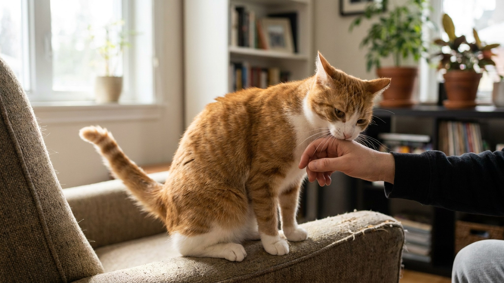

Кошка только что мурлыкала, лежала на коленях и подставляла голову под руку — а через секунду укусила и ушла. Хозяин растерян. Кажется, что это «беспричинно», но у кошки была очень чёткая причина — она её показывала несколько минут подряд. Мы просто не знали, куда смотреть. Пять сигналов тела, которые кошка даёт до укуса, и три правила, которые меняют всю динамику контакта.
🐾 Дневник здоровья питомца — в кармане
Вес, прививки, симптомы и напоминания в одном приложении. AnimaLife следит за здоровьем питомца вместо вас.
Pet-induced aggression — реакция на поглаживание, которая кажется неожиданной, но на самом деле хорошо предсказуема. У кошек порог терпимости к прикосновениям значительно ниже, чем у собак, и он индивидуален: одна кошка готова к часовым объятиям, другой хватает трёх поглаживаний.
Механизм простой: поглаживание стимулирует нервные окончания кожи. Поначалу это приятно. Со временем — и очень быстро у некоторых кошек — стимуляция становится раздражающей, почти болезненной. Кошка начинает сигнализировать об этом. Если сигнал не прочитан — следует укус. Это не агрессия из злобы, это коммуникация.
Хвост — самый ранний и самый читаемый индикатор. Пока кошке комфортно, хвост неподвижен или медленно покачивается. Как только появляется раздражение, хвост начинает:
Любое движение хвоста во время поглаживания — это сигнал убрать руку. Сделайте паузу. Если кошка снова потёрлась или мяукнула — можете продолжить.
Расслабленные уши — вперёд или в стороны. Как только кошке становится некомфортно, уши начинают медленно поворачиваться назад и вниз. Плоские уши, прижатые к голове — это уже максимальный уровень напряжения, не момент для продолжения ласки.
Важно: уши работают очень быстро, и изменение может быть небольшим — не «самолётные» уши, а просто чуть повёрнутые назад. Этого достаточно, чтобы сделать паузу.
Фасцикуляция — подёргивание кожи на спине, как будто по ней пробегает волна. Это непроизвольная нервная реакция на избыточную тактильную стимуляцию. Кошка при этом может продолжать мурлыкать — не путайте с удовольствием. Мурлыканье у кошек не равно исключительно счастью; они мурлычут и в состоянии напряжения.
Если видите волну по коже — заканчивайте сессию сейчас, до укуса.
Расслабленная кошка смотрит мягко, часто медленно моргает. При нарастании дискомфорта взгляд становится фиксированным, зрачки расширяются, даже при нормальном освещении. Кошка может начать смотреть на вашу руку — это уже целеуказание.
Медленное моргание в ответ на ваше медленное моргание — знак доверия и расслабленности. Отсутствие моргания и пристальный взгляд — обратное.
Расслабленная кошка лежит мягко, мышцы не напряжены. Перед укусом:
Совокупность двух-трёх из этих сигналов — надёжный предвестник. Один сигнал уже достаточен, чтобы остановиться.
Это не жёсткое ограничение — это инструмент для перенастройки ваших ощущений. Погладьте кошку три раза и остановитесь. Наблюдайте. Если кошка потёрлась о руку, подставила голову или издала звук — она просит продолжения, и вы можете продолжить. Если осталась нейтральной или отодвинулась — на этом сессия завершена.
Смысл правила: вы переходите от монолога к диалогу. Кошка начинает понимать, что её сигналы работают — хозяин слышит. Это само по себе снижает тревогу и со временем повышает терпимость к прикосновениям.
У большинства кошек есть предпочтительные и нежелательные зоны.
Обычно приятно:
Часто нежелательно:
Каждая кошка индивидуальна. Со временем вы точно знаете карту своей кошки — это нормальный процесс, который занимает недели и месяцы.
Лучшее наказание за укус — прекращение контакта. Кошка хотела, чтобы вы остановились. Вы остановились. Сообщение принято.
Животные, которых трогают только когда они сами этого хотят, становятся более уверенными и, как правило, более ласковыми. Парадокс: чем реже вы навязываете контакт, тем чаще кошка сама его ищет.
Проверка согласия — простой тест. Поднесите руку на 10–15 сантиметров к кошке и остановитесь. Если она потянулась к руке — согласие есть. Если не среагировала или отвернулась — сейчас не её момент. Это займёт несколько секунд, но со временем кардинально меняет отношения.
🐾 Не уверены, что это опасно?
Опишите симптом в AnimaLife — AI-ветеринар за минуту подскажет, что в пределах нормы, а когда пора к врачу.
Если кошка кусает сразу при прикосновении (без нарастания сигналов), реагирует на прикосновение к конкретному месту явным дискомфортом, или поведение изменилось резко без видимой причины — это повод для осмотра. Боль в теле (артрит, кожное раздражение, травма) может делать прикосновение нестерпимым. Ветеринар исключит физическую причину, зоопсихолог поможет с поведенческой.
Материал носит информационный характер и не заменяет очную консультацию ветеринара.